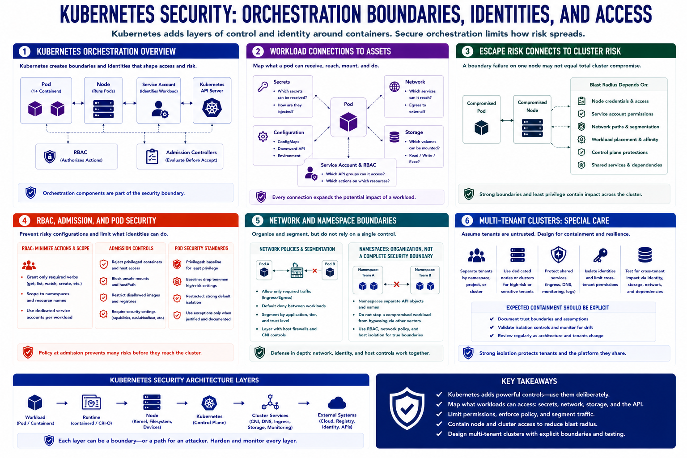

Kubernetes Context
Connecting to LMS... Progress: in progress

Narration
Kubernetes adds orchestration boundaries and identities around containers. Pods group one or more containers with shared context. Nodes run pods. Service accounts identify workloads to the API. RBAC determines allowed API actions, while admission controls evaluate objects before they are accepted.
Secrets, configuration, storage, and network policy connect workloads to other assets. The threat model should identify which secrets a pod can receive, which services it can reach, which volumes it can mount, and which API operations its service account can perform.
Container escape risk connects to cluster risk through node and orchestration access. A boundary failure on one node does not automatically mean total cluster compromise. Blast radius depends on node credentials, service-account permissions, network paths, workload placement, and control-plane protections.
RBAC should minimize actions and scope. Admission policies can reject privileged settings, unsafe mounts, disallowed images, or missing security requirements. Pod Security Standards provide a common baseline, but application-specific controls and justified exceptions are still necessary.
Network policies and segmentation limit workload communication, though they do not replace host isolation. Namespace separation organizes resources but should not be treated as a complete hard-security boundary by itself.
Multi-tenant clusters require special care. Separate workloads with different trust levels, consider dedicated nodes or clusters for high-risk boundaries, protect shared services, and test whether one tenant can affect another through identity, storage, network, or node dependencies. The architecture should make expected containment explicit.